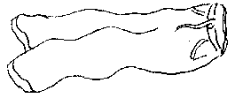

Tchi malheu! Y'a des mêprînses à braichies à touos les bords - sus d's êcritchieaux, sus des cartes et dans d's adresses. Mais ch'est bein qu'Meridian dé Souos l'Hôlouoge s'est ajouôté dans la Gâzette du Sé du 24 dé Septembre ès cheins tch'ont 'té à lus pliaindre contre l'êcritchieau au Braye, dans la Baie d'Saint Ouën.
Assa, nou-s'a dêbraiesi Lé Braye en affichant l'nom au féminîn. Lé chein tch'est responsabl'ye méthite un co d'pid dans l'fond des braies pouor l'faithe braithe, et chenna à seule fîn dé lî'ensîngni la difféthence entre un braye et eune braie. Mais tchi? Ou n'êtes pon seurs vos-mêmes? Eh bein, un braye, ch'est un pâssage entre des rotchièrs. V'là tchi 'tait hardi împortant d'saver pouor les gens du temps pâssé quand un tas d'Jèrriais 'taient des pêtcheurs ou des vraitcheurs. Mais il est acouo împortant quand nou va siez les lapîns - Lé Braye en Aur'gny, ch'est l'même mot qu'siez nous.

Si ch'est pon tout l'monde tch'est fanmilyi auve un braye au jour d'aniet, les braies sont dé tchi dé touos les jours. Tchi qui porte les braies? Dans not' monde modèrne, ch'est l's hoummes et les femmes - v'là tch'éthait chotchi nos anchêtres quâsiment autant qu'l'êmagliéthie d'l'êp'lage du Braye. Les cheins tchi n'y sont pon accouôteunmés pouôrraient êt' dans la bliâse enfachis par des braies tchi sont fémininnes et des fros tchi sont mastchulîns, mais né v'là pouortchi qu'i' faut tréjous vérifier s'nou n'sait pon trop - et même s'nou-s'en sait hardi!
Mais ch'est-i' qu'j'ouais des brais? Nou m'crie qu'j'ai oublié d'distîndgi un brai et du brais. Bein, j'm'en vais travailli à raide braiche pouor en faithe. Nou sait bein qu'si l's Aur'gnais sont des lapîns, et les Jèrriais sont des crapauds, ch'est qu'les Dgèrnésiais ont des longues ouothelles et braient. Nou dit qué quand un âne brait, ch'est sîngne dé plyie. Mais ch'est à un difféthent litchide qu'nou pense quand ch'est eune tchestchion du brais, tch'est du blié grée pouor la faîs'sie d'biéthe.
Ah mais, j'sis les braies bas en tâchant d'explyitchi tout chennechîn. Tchitch'un dait s'en haler les braies nettes, en amendant - et dêliêment - Lé Braye coumme i' dait êt'.
Geraint Jennings
Viyiz étout: